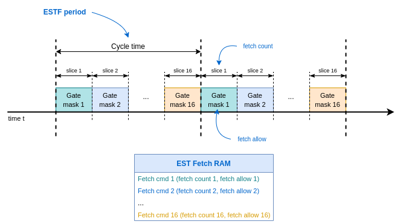
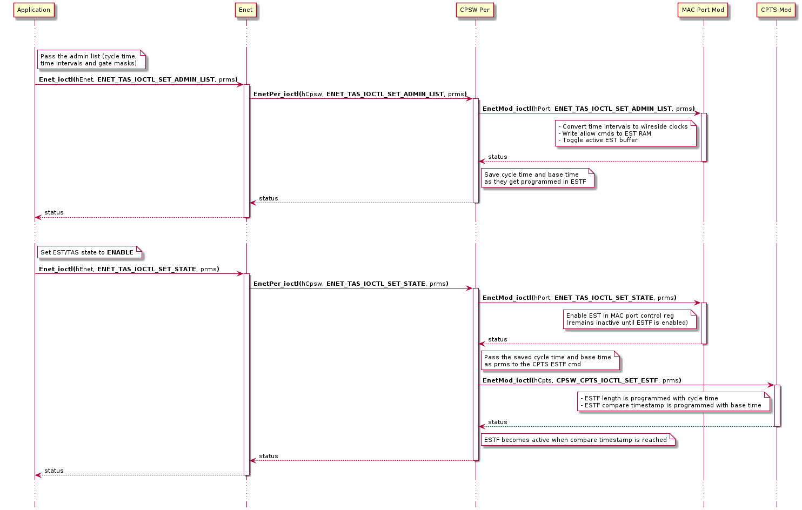
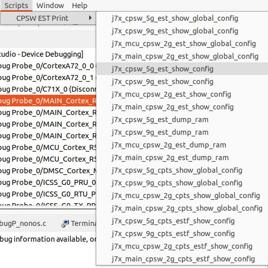

4.7.5.1. Enet EST/TAS Support¶
4.7.5.1.1. Introduction¶
4.7.5.1.1.1. IEEE 802.1Qbv EST/TAS¶
IEEE 802.1Qbv Time-Aware Shaper (TAS),
which is also called EST in IEEE Std 802.1Q-2018, defines a mechanism to allocate
and grant exclusive Ethernet port transmission access on repeating cycles which
are divided into slices where traffic of specific traffic class queues can be
selected for transmission as per use-case requirements.
The diagram below shows a generic EST schedule composed of n slices (also called time intervals), each slice has specific gate mask that defines the state of each transmission gate: open or closed.

Transmission gates are associated with specific traffic class queues (0-7). When a gate is open, frames from the corresponding queue can be selected for transmission. When the gate is closed, frames from the corresponding queue will not be selected for transmission. It’s up to the application to determine the duration of each time slice and the state of each transmission gate.
The list of all gate states for all slices in the cycle is called gate control list. The control list that is programmed is called administrative list, when list becomes active is then called operational list.
For further information about TAS/EST specification, please refer to section 8.6.9 Scheduled traffic state machines of IEEE 802.1Q-2018 standard document.
4.7.5.1.1.2. Guard band¶
It’s worth noting that in EST, the transmission of a frame will not be interrupted, the full frame transmission will be completed even if it spills over the next time slice. This could pose a problem when traffic from the previous time slice, potentially of lower priority, spills over the next time slice meant for higher priority traffic.
A guard band, which is a time slice with all gates closed, can be added right before critical time slices to ensure that wire is cleared of any previous traffic. The duration of the guard band must be set long enough for a packet of MTU size that initiated transmission right before the non-critical time slice ended had been fully transmitted.
4.7.5.1.1.3. Enet LLD API¶
Enet LLD provides support for TAS/EST through the IOCTLs described in the ENET_MOD_TAS API Guide.
The most important IOCTLs are listed below:
ENET_TAS_IOCTL_SET_STATESets the state of TAS module for each MAC port
ENET_TAS_RESETto reset the state machine.
ENET_TAS_ENABLEto start EST/TAS after a valid administrative list has been programmed.
ENET_TAS_DISABLEto stop (idle) EST/TAS.
ENET_TAS_IOCTL_SET_ADMIN_LISTSets a new administrative list of type EnetTas_ControlList.
ENET_TAS_IOCTL_GET_OPER_LIST_STATUSGets the status of the operational list update.
ENET_TAS_IOCTL_GET_OPER_LIST_STATUSmust be called after a new operational list has been set until driver acknowledges that the operational list has been updated by returningENET_TAS_OPER_LIST_UPDATED. The operational list is a structure of typeEnetTas_ControlListwhich is the same type used for administrative lists describer earlier.
The gate control list is composed of:
baseTime The administrative base time which determines when the administrative list will become active. The base time can be set to a timestamp in the past, in which case the administrative list should become active right away. The base time can also be set to a timestamp in the future, but note that not all Ethernet peripherals may fully support this feature.
gateCmdList The actual gate control list defined as list of time interval duration and gate state mask pairs. Enet LLD supports up to 16 intervals for simplicity, though some Ethernet peripherals may support larger number of intervals.
listLength The number of entries in the gatecontrol list.
cycleTime The repeating cycle time. If it’s larger that the accumulated time of all the intervals in the control list, the last time interval gets extended till end of the cycle. If it’s shorter than the accumulated interval time, then the gate control list gets truncated as per cycle time.
sduTable The maximum service data unit (SDU) per queue.
The call sequence in the following diagram illustrates the typical usage of Enet LLD IOCTLs to configure EST/TAS on a given MAC port.
4.7.5.1.2. CPSW Support¶
4.7.5.1.2.1. CPSW EST Driver Implementation¶
The EST functionality in CPSW is implemented in Enet LLD through two of its Enet LLD modules: CPTS and MAC port.
Each Ethernet port has an EST function generator (ESTF) in the CPTS hardware module, this is used to program the EST cycle time.
Each Ethernet transmit port has 128 locations in the CPSW global EST Fetch RAM which is used to program the EST gate control list. The EST RAM is programmed with fetch commands which are composed of fetch count (time slice duration) and fetch allow (gate mask).
The following diagram shows the EST schedule and the relevant CPSW components.
Fetch allow is an 8-bit field, where each bit corresponds to the state of each of the 8 gates (one per priority) in a given time slice. The priority being referred to in the context of EST maps to the CPSW switch priority (not to be confused with other CPSW priority types: packet priority or header packet priority).
Fetch count value is defined in terms of wireside clock cycles, so the link speed needs to be taken into account when computing the value to be set in hardware. This is taken care internally by the driver as the application can simply pass the time slice duration in nanoseconds.
The shortest time slice allowed by CPSW is a fetch count of 16, which corresponds to 128 nanoseconds for 1-Gbps link or 640 nanoseconds for 100-Mbps link. The longest time slice allowed by CPSW is determined by the length of the fetch count field (14-bits), which corresponds to 131.064 microseconds for 1-Gbps link or 655.32 microsecondds for 100-Mbps link.
The EST Fetch RAM can be configured in one buffer (all 128 locations operate
as single buffer) or two buffer operation mode (two buffers of 64 locations
each). Enet LLD configures the EST RAM in two-buffer operation mode in order
to use one of the buffers to hold the operational list, while the other buffer
can be programmed with the next administrative list. It’s worth noting that
only 16 of the 64 EST RAM locations are being currently used by the driver.
This limitation comes from the size of the EnetTas_ControlList::gateCmdList
field in TAS IOCTL, which is ENET_TAS_MAX_CMD_LISTS.
The transmit queues size is configurable in CPSW hardware via CPSW_PN_MAX_BLKS
and CPSW_PN_TX_BLKS_PRI registers. CPSW_PN_MAX_BLKS can be used to set
how many 1-kB blocks of a total of 20-kB are partitioned for TX and RX.
CPSW_PN_TX_BLKS_PRI can be set used to specify how many of the 1-kB TX blocks
can be occupied per priority. When all TX blocks allowed for a given priority
are used, any new frame of that priority will be dropped.
Note that the transmit queue sizes are not configurable via Enet LLD at the moment. The default setting is 16 blocks for TX and 4 for RX. TX priority 7 can occupy all 16 blocks, priority 6 can occupy 15 blocks, …, priority 0 can occupy only 8 blocks.
The following call sequence diagrams shows the steps taken by the driver when an administrative list is being programmed and EST is then being enabled.

4.7.5.1.3. Programing Guidelines and Limitations¶
4.7.5.1.3.1. Administrative base time¶
As per EST/TAS specification, the administrative base time can be set to a time ahead (future time) or behind current time (past time). When set to a past time, CPSW driver will start ESTF right away. When set to a future time, CPSW driver will handle it differently depending on the current EST state.
If EST is in disabled
ENET_TAS_DISABLEor resetENET_TAS_RESET, states, then driver will allow a non-zero administrative base time, potentially a future time.If EST is in enabled state
ENET_TAS_ENABLE, then driver will reject any non-zero administrative base time.
Administrative base time at a future time is implemented in the driver using ESTF timestamp comparison feature, where driver can program the desired timestamp when ESTF will start generating its output. The EST schedule is programmed in EST RAM in advance, the active EST buffer is also set accordingly. This sequence is simpler to program when EST is not enabled, which is the main motivation for the special handling described in the previous points.
4.7.5.1.3.2. Gate control list¶
The gate control list passed to the CPSW EST driver can be one of the following types:
Gate operation with non-zero time interval and non-zero gate mask. This is the regular gate operation for a time slice when at least one gate priority is enabled. User must set the time interval within the following limits:
Minimum time interval is 16 wireside clocks, so the equivalent time in nanoseconds depends on link speed. User can refer to the
CPSW_MACPORT_EST_TIME_MINmacro and pass the relevant link speed.Maximum time interval is determined by the length of the fetch count field (14-bits). User can refer to the
CPSW_MACPORT_EST_TIME_MAXmacro and pass the relevant link speed.Link speed
Min time interval (nsecs)
Max time interval (nsecs)
1 Gbps
128
131,064
100 Mbps
640
655,320
10 Mbps
6,400
6,553,200
Gate operation with non-zero time interval and zero gate mask. This is the gate operation used for guard band, intended to clear the wire for a packet in the next time interval. Guard band is described in more detail in next subsection.
Gate operation with zero time interval and non-zero gate mask. This gate operation will cause CPSW to hold the corresponding fetch allow for the remaining duration of the cycle.
CPSW EST driver uses this gate operation type internally to handle stretch case (control list duration < cycle time).
Application can use this operation type, but it must not be followed by a non-zero interval which is treated as error.
Gate operation with zero time and zero gate mask. This is an invalid operation type.
4.7.5.1.3.3. Guard band¶
When computing the duration of the guard band, the user must follow the zero allow guideline to compute the number of clocks needed to ensure wire is cleared from previous packet transmission:
1-Gbps: (maxPktLen + 4) + 292.
10/100-Mbps: ((maxPktLen + 4) * 2) + 292.
where maxPktLen is the maximum packet length (excluding FCS) in the previous time interval.
For example, the guard band for 2020 bytes max frame size in the previous time slot in a 100-Mbps link, the zero allow should be: ((2020 + 4) * 2) + 292 = 4340.
Just like any other time interval, the duration of the guard band passed to the driver has to be in nanoseconds but the zero allow values computed previuosly is in wireside clocks, so it must be converted to nanoseconds:
1-Gbps: ((maxPktLen + 4) + 292) * 8.
100-Mbps: (((maxPktLen + 4) * 2) + 292) * 40.
10-Mbps: (((maxPktLen + 4) * 2) + 292) * 400.
A helper macro CPSW_MACPORT_EST_GUARD_BAND is provided to compute the
guard band duration. User must pass the link speed (1G, 100M or 10M) and
the maximum packet length in the previuos time interval (excluding FCS).
For more details about the zero allow duration guideline, please refer to the TRM section called EST fetch values, in the CPSW chapter.
4.7.5.1.3.4. Link-down event¶
As described in enet_est_cpsw_driver section, the fetch allow
value programmed into EST RAM is in wireside clocks, so the link speed needs
to be taken into account when computing the allow value from a desired time
interval duration in microseconds.
When link is lost, the previous link speed is no longer valid or relevant, hence CPSW driver will clear the previous operational list programmed in EST RAM as part of its link lost event handling.
This also implies that application has to program again an administrative
control list via ENET_TAS_IOCTL_SET_ADMIN_LIST command when link is
back up. Enet LLD will not automatically restore the previous control list.
4.7.5.1.3.5. Limitations¶
The following EST features are not supported by the driver:
Administrative cycle time different from current operational cycle time is not supported.
Administrative cycle time extension is not supported.
Configuration of Maximum SDU table is not supported.
Administrative list needs to be configured again by application after link down events.
The following EST features have limited support in the driver:
Administrative base time at a future time is only supported when EST is not enabled.
Time slices longer than 131.064 microseconds (1-Gpbs) or 655.32 microseconds (100-Mbps) will be rejected by the driver. It’s up to the application to add two or more consecutive slots with same gate mask to accommodate for longer time slices.
4.7.5.1.4. Debugging and Troubleshooting¶
4.7.5.1.4.1. EST Timestamping¶
EST packet timestamping can be used as an aid for debugging purposes to verify if packets are being transmitted at the expect time based on the programmed EST schedule. CPSW supports four types of timestamping modes:
Timestamp all packets on any priority.
Timestamp all packets of given priority.
Timestamp the first packet in each time interval (time slice).
Timestamp the first packet of a given priority in the time interval.
CPSW driver provides the following private EST timestamp related IOCTLs to enable, disable and retrieve the generated EST timestamp events:
CPSW_MACPORT_IOCTL_EST_ENABLE_TIMESTAMP. Enables EST packet timestamping according to the requested configurationCpswMacPort_EstTimestampCfg:CpswEstTsMode One of the four CpswEstTsModeTypes described earlier.
CpswEstTsPri Only packets with this priority will be timestamped. Applicable to
CPSW_MACPORT_EST_TIMESTAMP_ONEPRIandCPSW_MACPORT_EST_TIMESTAMP_FIRST_ONEPRImodes only.CpswEstTsDom EST timestamped events will have this domain id when retrieved from CPTS.
CPSW_MACPORT_IOCTL_EST_DISABLE_TIMESTAMP. Disables EST packet timestamping.CPSW_CPTS_IOCTL_LOOKUP_EST_EVENT. Retrieves EST timestamps from CPTS driver using a match criteria (CpswCpts_EstEventMatchParams) of MAC port number and domain. The domain should be the same one used during enable phase inCPSW_MACPORT_IOCTL_EST_ENABLE_TIMESTAMP.
Apart from the actual timestamp value in nanoseconds, the EST timestamp events
CpswCpts_EstEvent also carry information about the priority (CPSW switch
priority), sequence number, ingress port (host port or another MAC port where
packet was initially received), egress port (the MAC port where EST packet was
transmitted) and the domain number.
Just like with any other CPTS event, CPSW driver services the CPTS interrupt
that is generated for each EST timestamp event, pops the event from the
CPTS FIFO and copies the event information into a software pool. The timestamp
event will reside in this software pool until the application reads it through
CPSW_CPTS_IOCTL_LOOKUP_EST_EVENT command. This process will consume
additional CPU cycles so it’s advised that this feature is not kept permanently
enabled.
The CPTS software pools ENET_CFG_CPSW_CPTS_EVENTS_POOL_SIZE need to be sized
properly to accommodate for bursty traffic. Driver will overwrite oldest events
in the pool as it handles new timestamp events.
4.7.5.1.4.2. CCS Debug GEL Files¶
CPSW debug GEL files can be loaded by loading the startup GEL file which can be located at pdk/packages/ti/drv/enet/tools/debug_gels.
The following image shows the EST GEL files once they have been loaded into CCS.
The available GEL functions are:
cpsw_est_show_global_config. Shows the global EST enable configuration as well as few other relevant fields of CPSW_CONTROL register.
cpsw_est_show_config. Shows the MAC port relevant configuration:
EST enable.
EST control: buffer mode (one or two buffer), selected buffer, timestamp configuration.
EST status: active buffer.
MAC control: gigabit enable, full-duplex configuration.
cpsw_est_dump_ram. Dumps the non-zero EST RAM locations. Due to two-buffer mode used by the driver, expectation is to see non-zero locations at:
Indexes 0, 1, 2, …, when buffer 1 is active.
Indexes 63, 64, 65, …, when buffer 2 is active.
cpsw_cpts_show_global_config. Shows relevant CPTS global configuration which affects all ESTF instandes.
Global CPTS configuration in CPTS_CONTROL register, such as CPTS enable, mode (32 or 64-bit), among others.
CPTS timestamp add value in CPTS_TS_ADD_VAL register. Useful to infer the CPTS reference clock frequency: TS_ADD_VAL + 1 is the timestamp increment value per CPTS clock pulse.
cpsw_cpts_estf_show_config. Shows the MAC port ESTF configuration:
Admin base time is configured in ESTF_COMP_HIGH (32 msbits) and ESTF_COMP_LOW (32 lsbits) fields.
Cycle time is configured in ESTF_LENGTH field: ESTF_LENGTH*(TS_ADD_VAL + 1) is the cycle duration in nanoseconds.